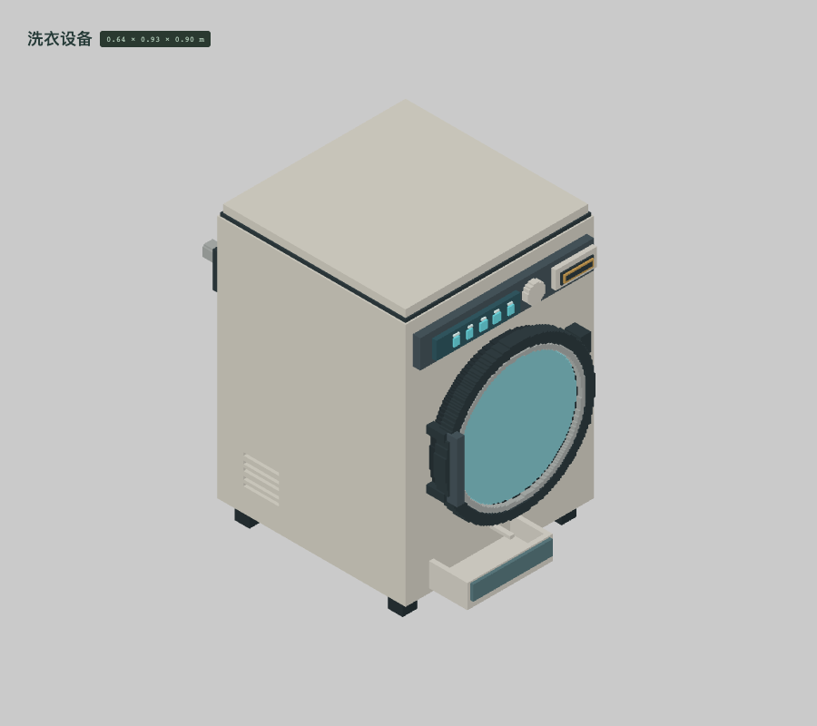
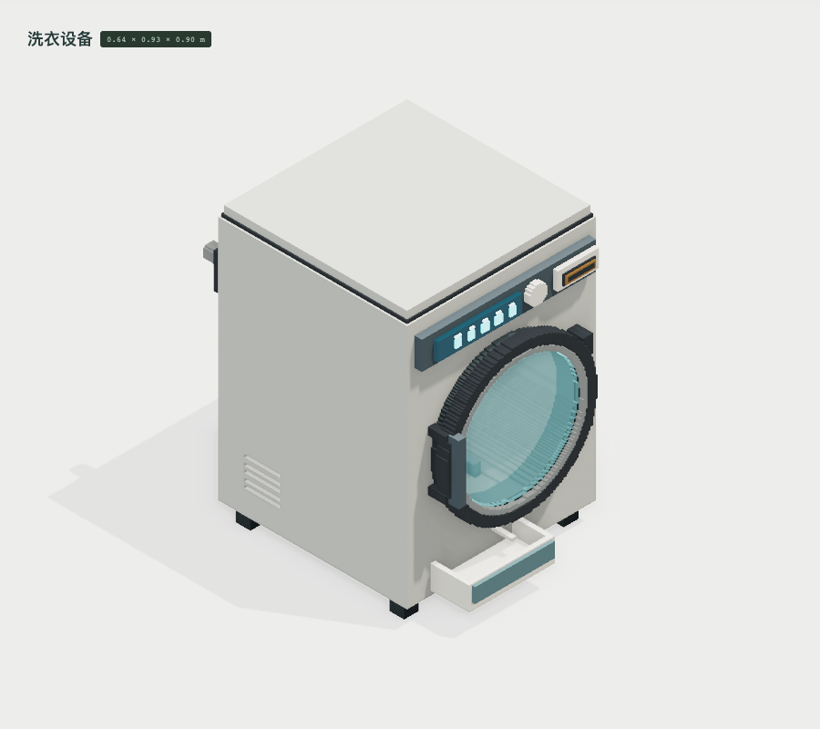
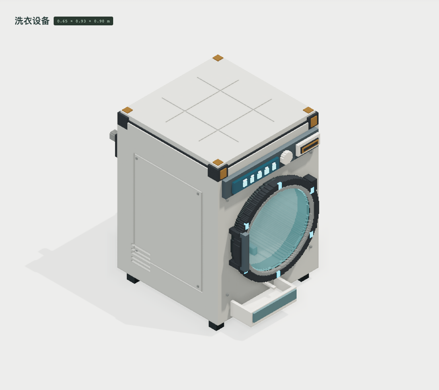
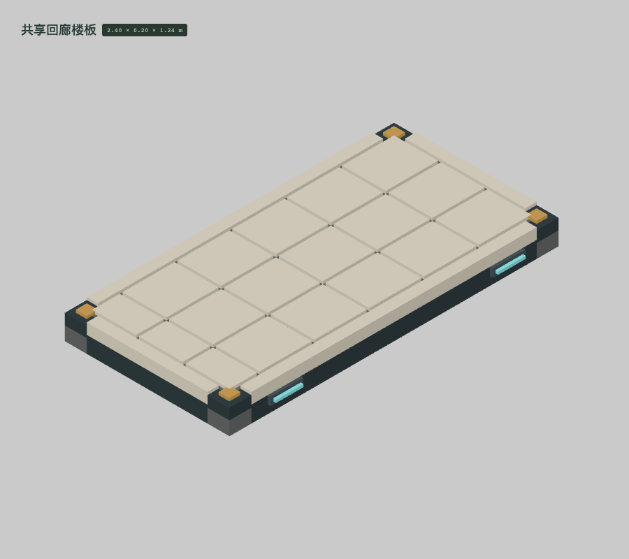
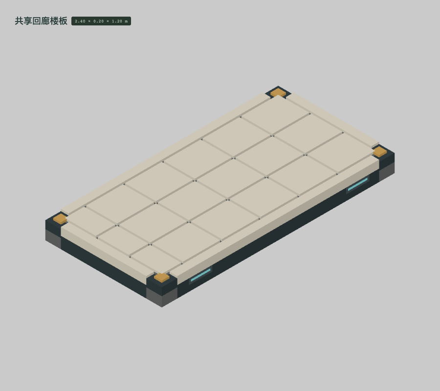
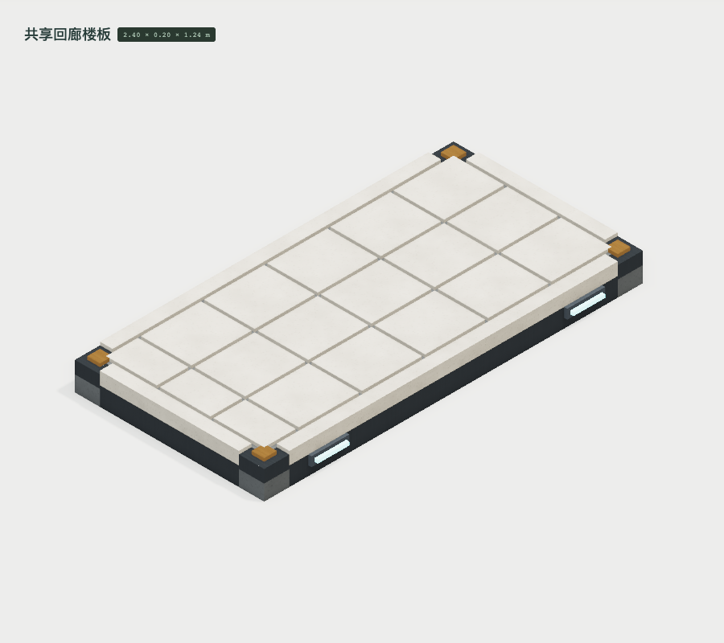
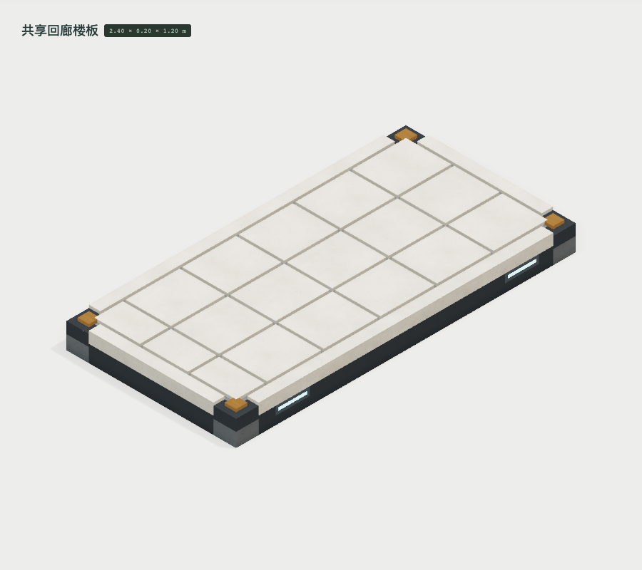
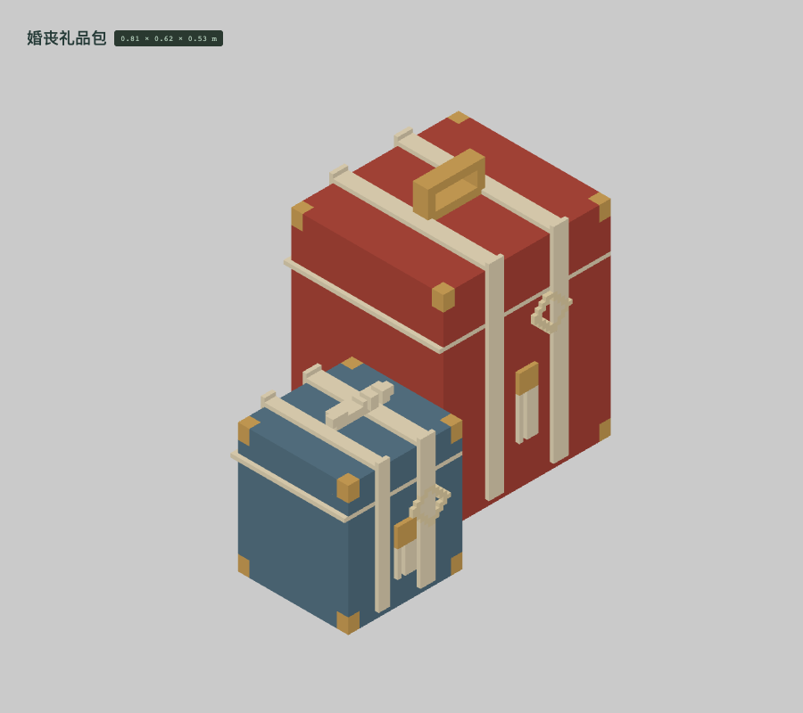
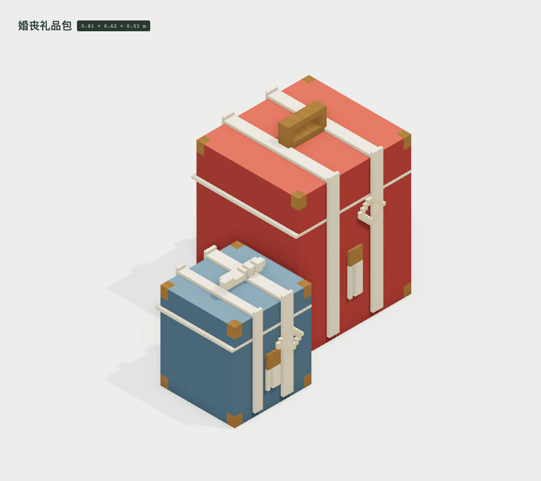

LIFE-198
补入金属护角、铜扣片、实际检修缝、铆钉和独立门环光学面；保留空滚筒、橡胶圈和玻璃。
占用格 933,251 → 934,690；三角形 20,124 → 21,576。现有材质映射及参数不变；新增的 plantStem 用于独立花卉母版。

修正前 · 素色验形修正后 · 素色验形
修正前 · 材质试作
修正后 · 材质试作BUILT-003
外凸灯盒改为嵌入边梁，齐平安装边界能连接楼梯顶平台；保留同一套安装点。
占用格 36,920 → 36,828；三角形 1,616 → 1,568。现有材质映射及参数不变；新增的 plantStem 用于独立花卉母版。

修正前 · 素色验形
修正后 · 素色验形
修正前 · 材质试作
修正后 · 材质试作LIFE-200
包布上的织纹改用通用浅色织物角色，解除对旗面纹样角色的借用；占用形状保持不变。
占用格 42,956 → 42,956；三角形 1,974 → 1,974。现有材质映射及参数不变；新增的 plantStem 用于独立花卉母版。

修正前 · 素色验形 修正后 · 素色验形
修正后 · 素色验形
修正前 · 材质试作修正后 · 材质试作